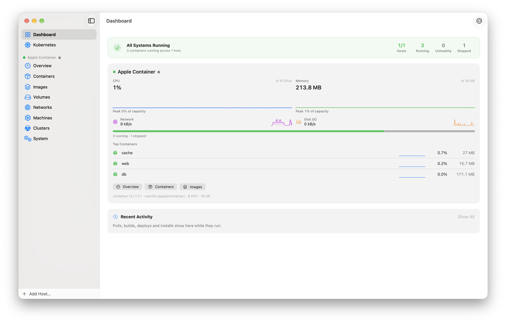

Die Mac-App für Apple container und Docker
Gantry ist eine kostenlose Open-Source-App für den Mac, für Apples container-Tool und für Docker, lokal und über SSH. Führe Container, Kubernetes-Cluster, Maschinen und Compose-Projekte auf apple/container in einem Fenster aus, neben deinen Docker-Hosts. Eine kostenlose Alternative zu Docker Desktop und OrbStack für den Mac.
Gantry 0.29.0 · macOS 26+ · Apple Silicon & Intel · MIT-Lizenz · 28 Sprachen · MCP-Server inklusive

Vom Befehl zum Steuerelement
Apples container-Tool und Docker sind Befehlszeilentools. Für jeden Befehl in dieser Tabelle hat Gantry ein Steuerelement.
- container
- docker
- docker compose
- kubectl
| Befehl | In Gantry |
|---|---|
container run, container create | Fenster „Neuer Container“ und Schnellstart: Image, Name, Befehl, Ports, Umgebung, Volumes, DNS-Domain, eigener Kernel und Boot-Argumente; Befehl einsetzen… liest eine docker run- oder container run-Zeile |
container logs | Tab „Logs“: Live-Verfolgung, Regex-Suche, Level-Filter, ANSI-Farben; Logs exportieren… sichert die sichtbaren Zeilen |
container stats | Tab „Statistiken“, Sparklines im Flotten-Dashboard und die Tabelle „Ressourcennutzung“ |
container exec | Tab „Terminal“ (interaktive Shell) und Tab „Prozesse“ |
container image pull, tag, delete, prune, inspect | Images: pullen mit Fortschritt, taggen, entfernen, bereinigen, untersuchen; Auf Schwachstellen prüfen… mit Trivy oder Grype |
container build | Baut die build:-Dienste einer Compose-Datei; der Bereich Builds listet die Builds, die Gantry gestartet hat |
container cluster create, list, delete, write-config, load-image | Cluster: Kubernetes-Cluster, Worker-Größen und gemeinsamer Image-Speicher (1.7), Nodes, Kubeconfig, Ressourcen durchsuchen, In Cluster laden (1.5 und 1.6) |
Kein compose-Befehl | Compose-Runner: eine docker-compose.yml aus dem Finder, über das Menü „Ablage“ oder per Drag-and-drop starten |
Funktionen
Jeder Bereich der App, mit den Befehlen, die er ersetzt.
- ContainerErstelle, starte, öffne und ändere Container auf jedem Host.
container run · docker exec -it - Images und BuildsPulle, baue, prüfe und entferne Images.
docker build · trivy image - ComposeFühre eine
docker-compose.ymlauf Docker oder auf apple/container aus und erstelle eine aus laufenden Containern.docker compose up -d - KubernetesDurchsuche jeden kubeconfig-Kontext oder erstelle einen Cluster mit apple/container.
kubectl logs -f - Hosts und FlotteDieser Mac, Docker-Hosts über SSH und apple/container auf einem Dashboard.
docker -H ssh://user@host - Logs und AusfälleLies, durchsuche und exportiere Logs. Finde die Ursache, wenn ein Container ausfällt.
docker logs -f - macOSDie Menüleiste, Mitteilungen, Spotlight, Kurzbefehle und die Tastatur.
⌘K · ⇧⌘E - AgentenEin integrierter MCP-Server gibt Claude und anderen Agenten dieselben Steuerelemente.
claude mcp add gantry


Die native macOS-GUI für Apple container
Apples container-Tool führt Linux-Container als leichtgewichtige VMs auf Apple Silicon aus, gibt es aber nur als Befehlszeilenwerkzeug. Gantry ist die Desktop-App dazu: Was Docker Desktop für Docker ist, ist Gantry für container. Es unterstützt jede container-CLI von 1.0 bis zur empfohlenen 1.7.1 und schaltet jede Funktion erst ein, wenn deine installierte CLI sie unterstützt.
- container system start
- container machine
- container builder start
Releases
- 0.29.0 · 0.28.0Die ganze Flotte in einer Tabelle und sicherere ImagesGantry 0.28.0 und 0.29.0 bringen eine Aktivitätstabelle für alle Hosts, einen Build-Verlauf, Image-Prüfungen mit Trivy oder Grype, Schlüsselbund-Geheimnisse für die Container-Umgebung und einen Export nach Compose. Du kannst Logs mit deinem Filter exportieren, „Fehler erklären“ ein Bildschirmfoto geben und Pulls, Builds und Compose-Läufe in der Menüleiste verfolgen.
- 0.27.0Kubernetes, Apple Intelligence und der Rest von macOSGantry 0.27.0 bringt einen Kubernetes-Browser, erklärt ausgefallene Container mit Apple Intelligence und arbeitet mit Spotlight, Siri, Widgets und dem Kontrollzentrum zusammen. Es unterstützt apple/container 1.7.1 und hat ein neues Design nach Apples Human Interface Guidelines.
Installation
Lade die App herunter oder installiere sie mit Homebrew. Du brauchst kein Konto.
- brew install --cask getgantry/tap/gantry
- InstallierenFühre den Homebrew-Cask aus oder lade die
.zipunter Releases herunter und zieheGantry.appin den Ordner „Programme“. - Erster StartNoch nicht notarisiert – Rechtsklick & „Öffnen“, oder entferne die Quarantäne mit
xattr -dr com.apple.quarantine /Applications/Gantry.app - Host hinzufügenLokales Docker erscheint von selbst. Für Apple container fügst du einen Apple Container-Host hinzu; Gantry bietet an, die
container-CLI einzurichten. Agenten:claude mcp add gantry.
Fragen
Ist Gantry kostenlos?
Ja. Gantry ist kostenlos und Open Source unter der MIT-Lizenz. Es gibt kein Abo, kein Konto und keine Begrenzung der Anzahl von Hosts oder Containern.
Was brauche ich für Gantry?
macOS 26 oder neuer auf Apple Silicon oder Intel sowie einen Docker-Daemon (Docker Desktop, OrbStack, Colima oder ähnlich) oder Apples container-Tool. apple/container selbst erfordert Apple Silicon; auf einem Intel-Mac verwaltet Gantry daher nur Docker-Hosts.
Was ist die beste GUI für Apple container?
Gantry ist eine kostenlose, quelloffene native macOS-GUI für Apples container-Tool (apple/container). Sie deckt den Lebenszyklus von Containern, Logs, Statistiken und ein Exec-Terminal ab, dazu die Teile der CLI, die andere GUIs nicht erreichen: Kubernetes-Cluster (container cluster), container-Maschinen, den Image-Builder, Registry-Anmeldungen, Kernel, Dienst-Logs und Systemeigenschaften. Sie unterstützt CLI 1.0 bis 1.7.1 und schaltet jede Funktion erst ein, wenn deine CLI sie unterstützt. Siehe den apple/container-Leitfaden.
Was ist Apple container (apple/container)?
apple/container ist Apples Open-Source-Tool, mit dem Linux-Container auf dem Mac laufen. Jeder Container läuft in einer eigenen leichtgewichtigen virtuellen Maschine auf Basis von Apples Virtualization-Framework. Es erfordert einen Mac mit Apple Silicon und kommt als Befehlszeilentool namens container, ohne Desktop-App. Gantry liefert diese Desktop-App.
Kann ich docker compose mit Apple container nutzen?
Ja. apple/container hat keinen compose-Befehl, deshalb übernimmt Gantry die Orchestrierung über die container-CLI: Es baut build:-Dienste, erstellt das Projektnetzwerk und benannte Volumes und startet jeden Dienst in der Reihenfolge von depends_on mit den Standard-Labels von Compose. Dienstnamen werden über Netzwerk-DNS-Aliasse aufgelöst. Öffne eine docker-compose.yml aus dem Finder, über das Menü „Ablage“ oder indem du sie auf das Fenster ziehst.
Ist Gantry eine Alternative zu Docker Desktop, OrbStack oder Podman Desktop?
Als GUI: ja. Gantry ist eine kostenlose, native macOS-App zum Verwalten von Containern, Images, Volumes, Netzwerken, Logs und Statistiken. Es ist ein Client, keine Engine: Gantry nutzt den Docker-Daemon, den du schon betreibst (Docker Desktop, OrbStack, Colima), oder Apples container-Tool und ergänzt eine Ansicht über mehrere Hosts, SSH-Hosts und einen MCP-Server. Siehe den Vergleich.
Wie installiere ich Gantry?
Führe brew install --cask getgantry/tap/gantry aus oder lade das neueste Release von GitHub herunter und ziehe Gantry.app in den Ordner „Programme“.
Können KI-Agenten Gantry steuern?
Ja. Gantry enthält einen MCP-Server und macOS App Intents. So erreichen Claude, Kurzbefehle, Siri und Skripte auf jedem Host, auch auf SSH-Hosts, dasselbe wie die GUI: Container, Images, Volumes, Netzwerke, Compose, apple/container-Maschinen, Kubernetes-Cluster, die apple_*-Systemwerkzeuge (Dienste, Builder, Registrys, Eigenschaften, Logs, Kernel) und Port-Freigabe. Ab macOS 26 fragt Fehler erklären… außerdem Apple Intelligence, warum ein Container ausgefallen ist. Füge den MCP-Server mit claude mcp add gantry -- /Applications/Gantry.app/Contents/Resources/gantry-mcp hinzu.